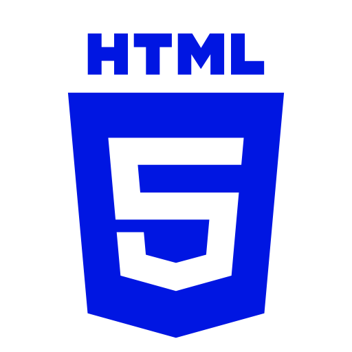

Gabriel Nunes

Linguagens:

- 


Meu nome é Gabriel Nunes, tenho 18 anos e estou em uma fase de aprendizado intenso. Atualmente, concluo o curso técnico em Informática e curso Sistemas para Internet na faculdade, o que me permite unir minha paixão por tecnologia com a busca constante por novos desafios.
Em 2021, atuei como Jovem Aprendiz na Sabesp, onde desenvolvi habilidades em organização, comunicação e trabalho em equipe. Em 2023, finalizei o curso de Assistente Administrativo no SENAI, fortalecendo minha base na área administrativa.
Desde criança, sempre fui fascinado por tecnologia, especialmente através dos videogames, o que despertou meu interesse por seguir carreira na área. Vejo na tecnologia um grande potencial de transformação e quero contribuir ativamente nesse cenário.
Além disso, sou praticante de tênis de mesa, um esporte que me ajuda a manter o foco, a disciplina e o equilíbrio na rotina. Estou sempre em busca de crescimento técnico e pessoal, animado com os desafios futuros e pronto para colaborar com projetos e equipes de forma positiva.